Lektion 5 - Materialien & Texturen
Inhalt
- Texturen
- Mix Nodes
- Bump und Displacement
- Node Gruppen
- UV Editing
5. Texturen
Bilder als Textur verwenden
Um Bilder auf 3D Objekten darstellen zu können, benötigen diese 2D Koordinaten auf die das Bild projiziert werden kann. Cycles kann diese mit den verschiedenen Optionen des Texture Coordinate Nodes automatisch generieren. Für gleichmäßige Texturen ist hierfür der Object Output am besten geeignet - kombiniert mit der Box Projektion im Image Texture Node. Falls speziell angepasste UV Texturkoordinaten benötigt werden (z.b. für Charaktere) wird der UV Output verwendet. Die anderen Optionen lassen sich am besten durch Ausprobieren herausfinden.
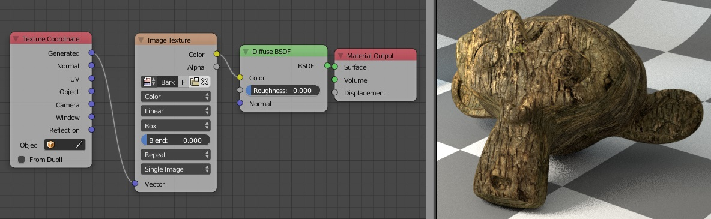
Mapping
Um Verschiebung, Rotation, Größe etc. einer Textur zu verändern kann zwischen den Texture Coordinate Node und die Textur ein Mapping Node hinzugefügt werden. Dieser sieht komplizierter aus als er ist, vorerst sind nur jeweils die drei Werte unter Location, Rotation und Scale wichtig.
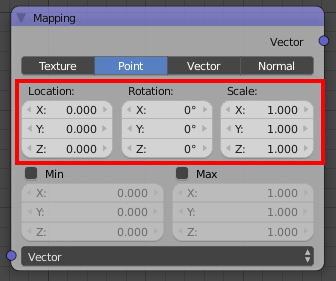
* Locaction verschiebt die Textur um die in x,y,z angegebenen Einheiten
* Rotation dreht die Textur um die jeweilige Achse
* Scale skaliert die Textur auf der jeweiligen Achse. Hierbei ist zu beachten, dass die Textur bei höheren Werten kleiner wird. (scale: 2 bedeutet die Textur wird 2 mal so häufig gekachelt)
Prozedurale Texturen
Diese Texturen werden automatisch vom Renderer generiert und haben einige Vorteile dass sie unbegrenzt sind und beim heranzoomen nicht verpixeln. Richtig kombiniert können viele Materialien von denen man es nicht denken würde komplett ohne Bildtexturen auskommen.
| Textur | Erklärung |
|---|---|
| Checker | einfaches Karomuster von zwei Farben. |
| Gradient | verschiedene schwarzweiß Farbverläufe |
| Noise | “Wolken” Textur, die sehr nützlich ist um Oberflächen Struktur zu geben. |
| Musgrave | komplizierte aber mächtige Textur, mit der interessante Muster erzeugt werden können. Mehr hier |
| Voronoi | “Schuppen” Textur, die zum Beispiel einen Sternenhimmel (siehe 3.3) erzeugen kann. |
Die Regler sind größtenteils selbsterklärend. Detail sollte zwecks Performance nicht übertrieben. Werte über 15 sind visuell meist kaum wahrnehmbar.
💡 Interessante Muster ergeben sich z.b., wenn die Scale einer Textur von einer anderen kontrolliert wird, wie hier z.b. Voronoi und Wave. 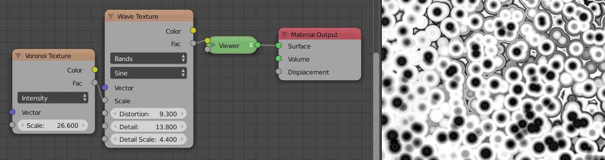
Prozedurale Texturen einfärben
Um Prozedurale Texturen einzufärben, können diese z.b. mit dem Faktor eines MixRGB Nodes verbunden oder der Color Ramp Node verwendet werden. Dieser nimmt je nach Helligkeit des inputs die entsprechende Farbe auf einem Farbverlauf an.
 this Ape is on Fire!
this Ape is on Fire!
6. Mix Nodes
MixRGB
Mit diesem Node lassen sich zwei Farben (bzw. die Texturen, die mit dem jeweiligen Farbsockel verbunden sind) anhand von den z.b. aus Photoshop bekannten Blendmodes (Mix, Addition, Overlay etc.) und eines Faktors, der auch über eine Maske kontrolliert werden kann vermischen.

*Grün und Blau werden abhängig vom Helligkeitswert einer Textur miteinander vermischt. Je heller die Textur, desto stärker wird die untere Farbe (hier Blau) an dieser Stelle des Objekts verwendet.*
Mix Shader
Mit diesem Node lassen sich zwei Shader abhängig von einem Faktor oder Maske miteinander vermischen.

Wie bei MixRGB Node wird der untere Shader je nach Helligkeit der Maske stärker verwendet.
💡 Um mehr als zwei Farben / Shader zu miteinander kombinieren kann der Output des Mix Nodes erneut mit einem Mix Node verbunden werden.
!! Aus Performancegründen sollte - falls nur Farben gemixt werden und der Shader sowieso gleich ist - immer der MixRGB Node verwendet werden.

Math
Der Math Node verrechnet zwei Werte je nach ausgewählter Rechenoperation. Werte von 0.0 bis 1.0 werden hierbei als Graustufen interpretiert wenn sie danach mit einen Shader / Farbsockel verbunden werden. Es sind jedoch auch höhere Aus- und Eingabewerte möglich.
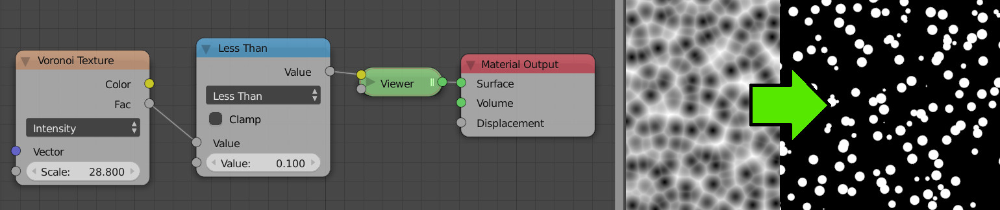
*Anwendungsbeispiel für Math bei dem eine Prozedurale Voronoi Textur über den “Less Than” Operator zu einem Riesensternenfeld umgewandelt wird. Alle Helligkeitswerte unter 0.1 der Textur werden zu weiß (1.0), der Rest zu schwarz (0.0)*.
💡 Der “Viewer” Node in diesem Beispiel ist ein temporärer Emission Shader des Node Wrangler Addons, der entsteht um Farben / Werte ohne manuell hinzugefügten Shader mit
Ctrl+Shift+LMBauf den jeweiligen Node schnell anzuzeigen.
7. Bump und Displacement
Prinzip
Bumpmaps können die Oberfläche von Materialien wesentlich detaillierter erscheinen lassen als sie eigentlich sind. Sie erzeugen mit Texturen scheinbare Erhebungen/Einkerbungen auf einer Oberfläche. In Wahrheit werden jedoch nur die “Normalen” der Oberfläche verändert, die u.a. den Lichausfallwinkel bestimmen. Der Schwindel fliegt auf, wenn man sieht dass die Ränder des Objekts ihre Form gar nicht verändert haben.
Bump Node
Normalerweise funktioniert Bumpmapping in Cycles über den Bump Node. Eine Textur wird in den Height Input des Nodes gezogen und der Normal Output des Bump Nodes mit dem Normal input des Shaders verbunden. Die Stärke des Effekts kann nun leicht über Strength kontrolliert werden.

Normal Map Node
Bildtexturen kommen oft mit sogenannten Normalmaps, die etwas genauer sind als einfache graustufenbilder für Bumpmapping. (Genaue Unterschiede hier). Diese funktionieren vom Aufbau her gleich wie Bumpmaps, nur dass hier der Color Output der Bildtextur in den Color Input der Normal Map gezogen wird. Zudem ist es wichtig in der Bildtextur von Color auf NonColor Data umzustellen (nutzt ansonsten den falschen Farbraum). 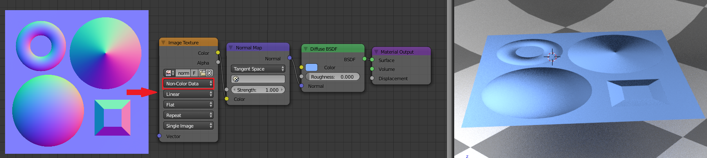
Displacement Output
Mit diesen Slot im Material Output Node kann auch eine Graustufenetxtur verbunden werden. Diese wird dann auf alle Shader im Material angewendet - kann also nicht einzeln pro Shader gesetzt werden wie bei Bump und Normal. Um die Stärke zu kontrollieren muss hier noch ein Math - Multiply Node dazwischen geschaltet werden und desen zweiter Wert als “Strength” verwendet werden.
 wie man sieht sollten Bump- und Normalmapping nicht übertrieben werden
wie man sieht sollten Bump- und Normalmapping nicht übertrieben werden
💡 Der eigentliche Grund, dass diese Möglichkeit existiert ist das seit neustem hinzugefügte Feature für “Micropolygon Displacement” - also echtes, nicht “gefaktes” Displacement abhängig von der Bildschirmauflösung. Ausführliches Tutorial vom YouTube Kanal “Blenderguru” dazu hier.
8. Node Gruppen
Prinzip
Oft gibt es Gruppen von Nodes, die in der selben Anordnung immer wieder vorkommen. Um sich die Arbeit der Wiederhohlung zu sparen und den Nodeeditor bei komplexen Materialien aufgeräumt zu halten gibt es sogenannte Node Groups. Diese ermöglichen es Gruppen von Nodes zu “eigenen Nodes” zusammenzufassen und immer wieder mit unterschiedlichen Parametern zu verwenden. Node Groups lassen sich gut mit Funktionen im Programmieren vergleichen.
Beispiel
Als Beispiel wird hier die häufig benötigte “Glossy Material” Kombination verwendet.
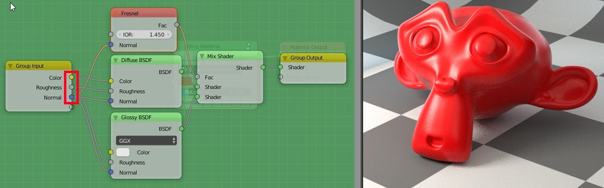
Zuerst werden die zu gruppierenden Nodes alle selektiert (selektion funktioniert wie im 3D View).
Ctrl+Gdrücken um die Nodes zu gruppierenDie neu erstellte Node Group öffnet sich. Wir befinden uns jetzt sozusagen in einem selbst erstellten Node. Es gibt Inputs und Outputs, die wir selbst festlegen können.
Wir müssen uns nun überlegen, welche Parameter wir für jeden Node zugänglich machen wollen. Wichtig hier sind die Stärke der Reflektion, Farbe und Rauheit der Oberfläche. Wir ziehen also den Blend Wert des Layer Weight Nodes in den Group Input Node. Dasselbe wiederhohlen wir mit dem Color Wert des Diffuse Shaders. Wer will kann auch die Farbe des Glossy Shaders in einen eigenen Input ziehen. In der Realität sind die Reflektionen jedoch sogut wie aller nichtleitenden Stoffe jedoch weiß. Für den Roughness Wert ziehen wir die Werte beider Shader in den selben Sockel im Group Input (es gibt hier keinen Grund für unterschiedliche Inputs). Als letztes verbinden wir noch alle drei Normal Inputs der Nodes mit einem Sockel um später noch Bumpmaps (siehe 6.) verwenden zu können.
In diesem Fall sind mit dem Shader bzw BSDF Output schon alle nötigen Outputs gesetzt, es ist jedoch auch möglich noch zusätzliche Outputs hinzuzufügen indem sie in einen neuen Sockel des Group Output Nodes gezogen werden.
Mit
Tabkönnen wir nun aus der Gruppe heraus navigieren (und auch wieder rein bei Bedarf). Wir haben nun einen eigenen Node erstellt, den wir immer wieder (auch bei anderen Materialien) verwenden können. Er ist ab nun im “Add” Menü unter “Group” verfügbar. verändern wir nun das Innenleben einer Gruppe, verändert sich das aller. Die zuvor in den Input gezogenen Parameter können jedoch im Node einzeln verändert werden.
💡Mit Druck auf die Taste
Ninnerhalb der Node Group öffnet sich eine Seitenleiste in der weitere Einstellungen z.b. die Benamung der In- und Outputs geändert werden können.💡 Sehr gute Tutorials zu Nodegruppen für Nichtleiter und Metalle finden sich auf dem YouTube Kanal “Blenderguru”
How to Make Photorealistic PBR Materials - Part 1
How to Make Photorealistic PBR Materials - Part 2: Metals
9. UV Editing
Texturkoordinaten
Mit den Texture Coordinate und Mapping Nodes kann die Zuordnung beeinflusst werden, welche Stellen eines Texturbildes an welchen Stelle auf der Geometrie dargestellt werden. Dies passiert grundsätzlihc in der Computergrafik über so genannte Texturkoordinaten.
Jeder Eckpunkt (Vertex) der Geoemetrie kann neben seiner 3D- (x, y, z)-Koordinaten im Raum zusätztlich auch noch mit einer 2D-Texturkoordinate versehen werden. Um die Achsen nicht zu verwechseln, werden die Achsen dieses zweidimensionalen Textur-Koordinatenraums statt mit X und Y mit U und V gekennzeichnet. Daher werden Texturkoordinaten oft auch mit UVs bezeichnet.
Der 2D-Texturkoordinatenraum wird nun mit einem Texturbild gefüllt, wobei das Bild entlang jeder Achse die Koordinatenwerte 0 für links/unten und 1 für rechts/oben erhält, egal, wie hoch und breit das Bild in Pixeln ist. Somit indiziert jede Texturkoordinate einen besitmmten Bereich des Bildes.
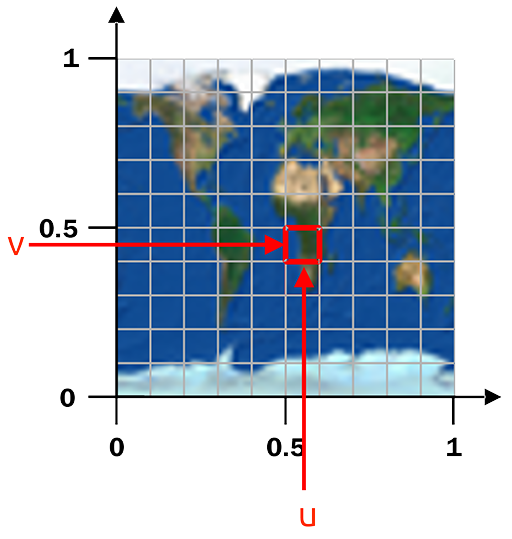
Auf diese Weise kann jeder Eckpunkt einer 3D-Geometrie an einer Stelle in der 2D-Texturkoordinaten- Ebene abgebildet werden, bzw. umgekehrt, jedem Eckpunkt der 3D-Geometrie wird eine Stelle aus dem 2D-Texturkoordinatenwert zugeordnet.
Damit ist auch festgelegt, welche Flächen der 3D-Geometrie wie in 2D-Textur-Ebene liegen, bzw. umgekehrt, welcher Teil der Textur auf welcher Fläche der 3D-Geometrie angezeigt wird.
Diese Zuordnung, das sogenannte UV-Mapping, kann in Blender ganz explizit angezeigt und bearbeitet werden.

Im Folgenden sollen die UV-Koordinanten für die Eckpunkte einer Kugel so ausgerichtet werden, dass das oben gezeigte Bild der Erdoberfläche darauf gemappt wird.
Kugel erzeugen und in die UV-Edit Ansicht wechseln
In einer leeren Blender-Szene wird zunächst wird mit Shift+A->Mesh-> UV-Sphere eine Kugel erzeugt.
Um die Kugel rund darzustellen, wird Smooth Shading eingestellt.
Um die UV-Koordinaten direkt zu sehen und bearbeiten zu können, wird in das UV-Editing-Screen-Layout
umgeschaltet. Mit T und/oder N werden die Tool- und Properties-Panels ausgeblendet.

Einfache sphärische Abwicklung
Um die Abwicklung vorzunehmen sollte dann mit Num 5, Num 1 in die orthografische Ansicht
von vorne geschaltet werden und mit (ggf. mehrfachem) A sämtliche Eckpunkte der Geoemetrie
selektiert werden.
Nun kann mit U, bzw. Mesh->UV Unwrap und dann ->Sphere Projection eine automatische Abwicklung
durchgeführt werden. Die Abwicklung hängt hier von der 3D-Ansicht ab. durch Drehen der Ansicht mit
Num 4 und Num 6 und wiederholtes Unwrapping mittels Sphere Projection sollte eine grade linke
und rechte Kante in der Abwicklung erkennbar werden.
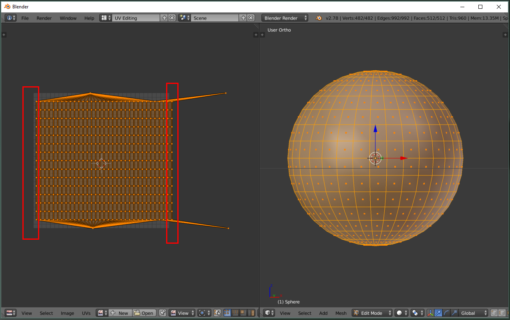
UV Koordinaten anpassen
Im Bild oben sind die geraden Kanten markiert. Gut zu sehen sind noch die beiden “Ausreißer”
der Pol-Abwicklung. Diese beiden Eckpunkte können mit G und X entlang der X-Achse in
den Bereich der anderen Textur-Koordinaten bewegt werden.
Dann sollte noch durch Skalieren (S) und Positionieren (G) der von den Texturkoordinaten
eingenommene Bereich über den gesamten Koordinaten-Wertebereich (0…1) ausgedehnt werden.

Im Bild oben wurde zudem bereits das Oberflächenbild der Erde zur Kontrolle als Hintergrundbild des UV-Editors ausgewählt. Dies führte dazu, dass der Texturkoordinatenbereich von seiner ursprünglich quadratischen Form nun die Proportionen des Texturbildes angenommen hat.
Material mit Textur einfügen
Schließlich kann im 3D-Editor ein Material angelegt werden, dass die Textur im Diffuse-Kanal enthält. Somit wird das Bild auf der Kugel dargestellt.
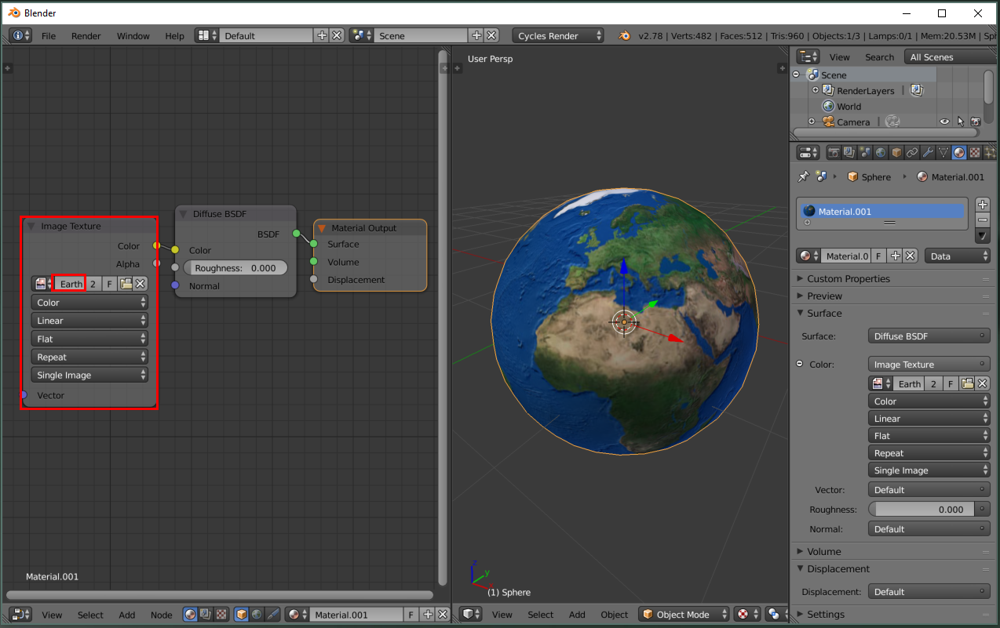
Anhang: Cycles Einstellungen
Cycles produziert zwar mit den Standarteinstellungen schon ganz akzeptable Renderings, jedoch können Renderzeit und Rauschfreiheit mit den richtigen Einstellungen stark verbessert werden. Hier eine Anleitung zu den wichtigsten Optionen.
1. GPU Rendering
Falls ihr eine halbwegs gute Grafikkarte habt, kann diese zum deutlich schnelleren rendern verwendet werden. Zunächst muss unter File -> User Prefferences -> System in der unteren rechten Ecke als Compute Device CUDA ausgewählt werden (bzw. OpenCL für AMD Karten) Falls das nicht funktioniert unterstützt eure Grafikkarte leider kein GPU Rendering.
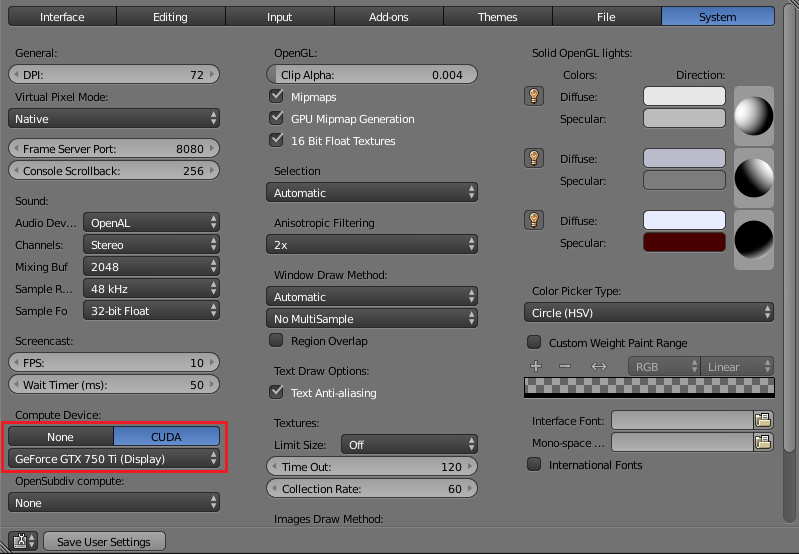

2. Device:
Erscheint sobald ihr Schritt gemacht habt. Hier kann nun von CPU auf GPU Rendering umgestellt werden.
3. Samples
die wichtigste Einstellung. Desto mehr Samples, desto rauschfreier das Ergebniss. Die Renderzeit steigt jedoch linear mit der Anzahl an Samples.
3.1 Zufälliger Seed für jeden Frame. Sollte bei Animationen IMMER aktiviert werden, damit das Rauschen nicht statisch ist.
4. Clamp
Um sogenannte “Fireflies” (einzelne helle Pixel an unpassenden Stellen) zu verhindern, können Pixel mit außergewöhnlich hohen Werten “geclampt” werden. Es wird also verhindert, dass diese einen zu hohen Wert erreichen. Auf 0.0 gesetzt ist der Effekt deaktiviert. Andernfalls wird der Effekt stärker, desto niedriger der Wert. Wird der Wert zu niedrig gesetzt gehen Highlights verloren also nicht zu niedrig setzen. Mit direkttem Licht entstehen kaum Fireflies, deshalb kann der Wert hier auf 0.0 gelassen werden. Für Clamp Indirect ist 3.0 ein ganz guter Startwert, der bei Bedarf angepasst werden kann.
5. Light Paths:
Transparency: Bestimmt z.b. durch wie viele Schichten Glas hintereinander man hindurchsehen kann bevor die Berechnung aufhört.
Bounces: Hier wird angegeben, wie oft das Licht zwischen den verschiedenen Oberflächen hin und her springt. Wollte man zum Beispiel ein Spiegelkabinett rendern, sollte man Glossy sehr hoch setzen, damit genug Reflektionen des Raumes entstehen. Desto weniger, desto “unrealistischer” das Ergebniss, allerdings sinkt auch die Renderzeit. Die Standarteinstellungen sind etwas übertrieben. Hier ein ganz guter Ausgangswert für alle Einstellungen.
Caustics: Z.b. die Reflektionen von Metall auf andere Oberflächen. Kann für Rauschreduktion ausgestellt werden, nimmt aber dann einiges an Realismus.
Filter Glossy: Filtert Reflektionen um Rauschen zu reduzieren. 0.5 ist hier eigentlich immer ok.
6. Tiles:
sollte für GPU Rendering deutlich erhöht werden, da die Grafikkarte immer nur einen Tile aufeinmal rendert, während der CPU (je nach Anzahl der Threads) mehrere rendert. Gute Voreinstellungen sind:
32 x 32 für CPU
256 x 256 für GPU
7. Progressive Refine:
Sorgt dafür, dass sich beim Rendern das Bild sofort aufbaut und nach und nach feiner wird. So kann die Anzahl an Samples absurd hoch gesetzt werden und das Rendering manuell abgebrochen werden wenn das Rauschen gering genug ist. Das verlangsamt das Rendern allerdings etwas und macht bei Animationen natürlich keinen Sinn.
8. Denoising (siehe unten)
Diese Funktion kann für jedem Renderlayer extra eingestellt werden, da wir hier jedoch nur mit dem Standardlayer arbeiten reicht es, Den Haken bei “Denoising” ganz unten im “Renderlayer Tab” zu setzen.
! Für Animationen sollte 3.1 Zufälliger Seed deaktiviert werden, wenn Denoising aktiv ist.
Die Funktion wendet nach dem Rendern einen Denoising-Algorithmus an, der das Rauschen im Renderergebniss verringert. So kann mit deutlich weniger Samples ein klares Bild erzeugt werden, die Technik hat jedoch ihre Grenzen. Bei viel zu wenig Samples entstehen auch hier Fehler im Bild. Die Standarteinstellungen sind normalerweise gut genug, weitere Infos zu den Einstellungen hier.
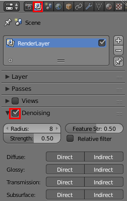